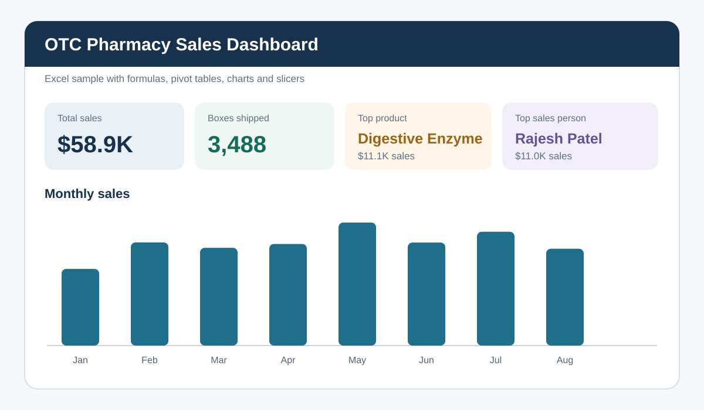
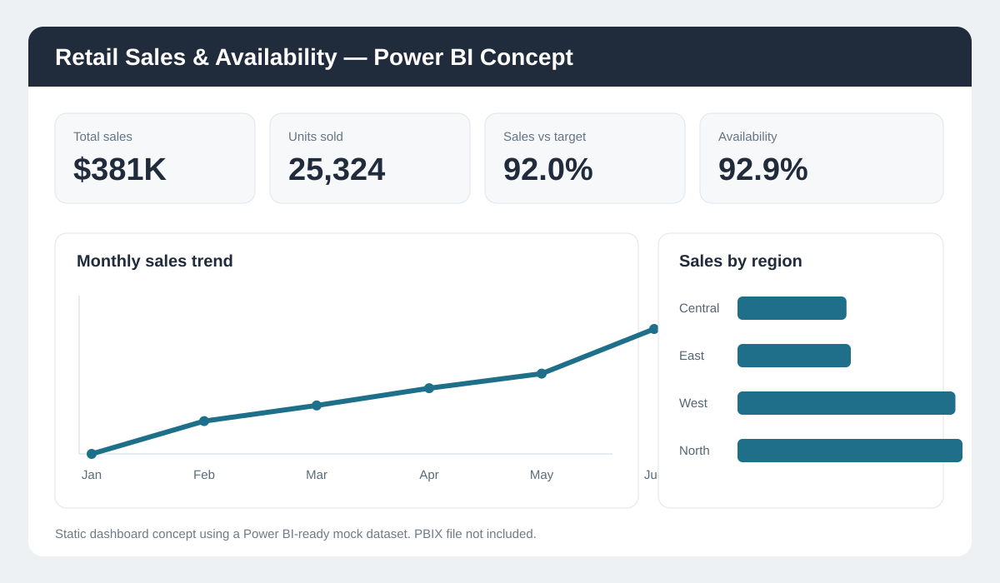

Excel sample · User-provided workbook
OTC Pharmacy Sales Dashboard
Excel dashboard with formulas, master data, pivot tables, charts and slicers for sales analysis.
View project →I am a Business Analyst with experience in retail and operations analytics. This portfolio combines real experience, academic group work and clearly labelled practice samples.
Each item is labelled as professional experience, academic group work or an independent practice sample.

Excel dashboard with formulas, master data, pivot tables, charts and slicers for sales analysis.
View project →
A simple Excel dashboard using mock retail data, formulas, exception rules and charts.
View project →
A Power BI-ready dataset, suggested DAX measures and a static dashboard concept.
View project →
Current-state analysis, gap assessment, strategic alternatives and a practical implementation plan.
View case study →
A simplified as-is and future-state view based on Bizagi process-mapping coursework.
View project →
A straightforward journey map and downloadable requirements document for an inventory dashboard.
View project →My background includes retail analytics, operational reporting and PMO coordination. I have worked with dashboards, data validation, requirements, workflow analysis and stakeholder reporting.
I am targeting Business Analyst, Data Analyst, Operations Analyst and Project Coordinator opportunities.
Power BI, Excel dashboards, KPI reporting, data cleaning, validation and reconciliation.
Requirements gathering, process mapping, gap analysis, root cause analysis and UAT support.
Milestones, timelines, action logs, risks, dependencies and cross-functional coordination.
Lean Six Sigma, current-state review, waste identification and practical recommendations.